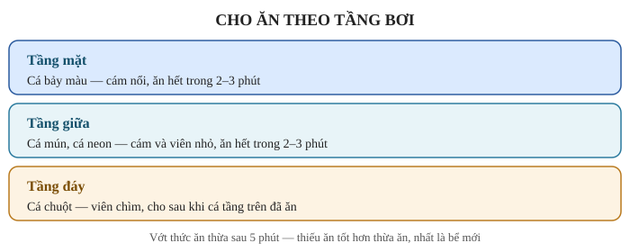

Cho cá cảnh ăn đúng cách: bao nhiêu, mấy lần và lỗi thường gặp
Cho cá ăn là việc vui nhất trong ngày của người mới nuôi cá. Cá bơi lên mặt nước, tranh nhau thức ăn, màu sắc rực lên dưới đèn. Vì vui như vậy nên người mới thường cho ăn nhiều hơn cá cần, cho ăn nhiều lần hơn cá cần, và cho ăn thêm mỗi khi có khách tới xem bể. Hậu quả không xuất hiện ngay trong bữa ăn đó, mà xuất hiện vài ngày sau: nước đục, rêu tảo bùng lên, amoniac tăng, cá bỏ ăn và chết dần.
Bài này viết về cách cho ăn đúng cho bể cộng đồng nước ngọt của người mới. Bài không viết lại chu trình nitơ đầy đủ, vì chu trình đó đã có ở Bài 2. Bài này chỉ dùng một kết quả của chu trình đó: thức ăn thừa phân hủy thành amoniac, và amoniac là chất độc với cá.
Cá ăn gì trong tự nhiên, và điều đó có nghĩa gì trong bể nhà bạn
Aqueon viết cá trong tự nhiên ăn khác nhau tùy theo chúng là cá ăn thực vật, cá ăn thịt hay cá ăn tạp. Cá ăn thực vật thường kiếm ăn suốt ngày, vì cần nhiều thực vật mới đủ chất. Cá ăn thịt ăn ít lần hơn, vì trong tự nhiên chúng không bắt được mồi mỗi ngày. Cá ăn tạp có nhiều lựa chọn nhất. Hầu hết cá cảnh trong bể cộng đồng của người mới đều là cá ăn tạp, với một số loài thiên về thực vật và một số loài thiên về thịt hơn.
Điều này có nghĩa là bạn không nên cho tất cả các loài trong bể ăn cùng một loại thức ăn, cùng một cách, mỗi ngày. Aqueon viết nếu bạn nuôi cả cá ăn thực vật và cá ăn thịt trong cùng một bể, hãy xen kẽ các bữa ăn giàu đạm thịt và các bữa ăn có nguồn gốc thực vật để mọi loài đều khỏe. Đa dạng thức ăn quan trọng với mọi loài, vì ngay cả cá ăn thịt cũng có lợi khi ăn thêm một ít thực vật, và ngược lại.
Trong bể của người mới, ba nhóm thức ăn thường gặp là thức ăn khô (cám, viên), thức ăn đông lạnh (trùn chỉ, artemia, bo bo đông lạnh) và thức ăn tươi sống. Thức ăn khô tiện nhất cho bữa hằng ngày, vì dễ bảo quản và dễ chia liều. Thức ăn đông lạnh và tươi sống giàu dinh dưỡng hơn, nhưng dễ làm bẩn nước nếu cho quá nhiều và không được xử lý đúng cách. Người mới nên bắt đầu bằng thức ăn khô chất lượng tốt, rồi bổ sung thức ăn đông lạnh một tới hai lần mỗi tuần, thay vì cho thức ăn tươi sống mỗi ngày ngay từ đầu.
Kích thước thức ăn phải hợp với miệng cá. Aqueon viết rõ cá nhỏ như cá neon không ăn được viên thức ăn lớn, và thức ăn thừa sẽ nhanh chóng làm bẩn bể. Nếu bạn nuôi cá neon cùng với cá bảy màu, hãy nghiền nhỏ cám hoặc chọn thức ăn viên siêu nhỏ cho cá neon, đừng cho viên to rồi mong cá neon tự cắn nhỏ ra.
Bao nhiêu là đủ: quy tắc 2–3 phút
Câu hỏi khó nhất không phải là "cho ăn mấy lần", mà là "cho ăn bao nhiêu". Aqueon đưa ra quy tắc chung: chỉ cho lượng thức ăn mà cá ăn hết trong 2–3 phút. Nếu thức ăn hết trong chưa tới 2 phút, bạn có thể cho thêm một ít. Nếu sau 5 phút vẫn còn thức ăn thừa, bạn đã cho quá nhiều, và cần vớt thức ăn thừa ra bằng vợt hoặc ống hút.
Quy tắc 2–3 phút nghe đơn giản, nhưng người mới thường làm sai ở bước đầu tiên: họ lấy một nhúm thức ăn trong tay rồi mới nhìn đồng hồ. Thức ăn khô nở ra khi gặp nước, vì vậy một nhúm nhìn nhỏ trong tay có thể trở thành một lượng lớn trong bể. Cách làm đúng là bắt đầu bằng một lượng rất nhỏ, nhỏ hơn bạn nghĩ, rồi quan sát cá ăn trong 2–3 phút. Sau vài ngày, bạn sẽ biết bể của mình cần bao nhiêu.
Bảng dưới đây giúp bạn ước lượng theo tầng bơi, không phải theo loài cụ thể. Bảng này tóm tắt từ hướng dẫn của Aqueon, không phải bảng của Aqueon.
| Tầng bơi | Loại thức ăn hợp nhất | Cách cho ăn |
|---|---|---|
| Mặt nước | Cám nổi, viên nổi nhỏ | Rắc ít một, chờ cá ăn hết rồi mới rắc tiếp |
| Giữa nước | Cám chìm chậm, viên nhỏ | Ngâm nhẹ hoặc khuấy nhẹ ở mặt nước để thức ăn chìm từ từ |
| Đáy bể | Viên chìm, thức ăn dạng viên nén cho cá đáy | Thả sau khi cá tầng giữa đã ăn xong, để cá đáy có phần của mình |
Cá đáy như cá chuột cần được cho ăn riêng. Nếu bạn chỉ rắc cám nổi, cá tầng giữa sẽ ăn hết trước khi thức ăn chìm xuống đáy. Cá chuột không sống được bằng thức ăn thừa của cá khác. Hãy cho cá chuột viên chìm sau bữa ăn chính, và kiểm tra sau vài giờ xem viên thức ăn đã hết hay chưa. Nếu viên thức ăn còn nguyên sau vài giờ, bạn đã cho quá nhiều.
Một cách kiểm tra khác là nhìn bụng cá từ trên xuống. Bụng cá hơi tròn sau khi ăn là bình thường, bụng phình to bất thường là dấu hiệu cho ăn quá nhiều. Đừng dùng cách này một mình để quyết định liều lượng, mà hãy kết hợp với quy tắc 2–3 phút và kết quả đo nước.
Mấy lần một ngày: một tới hai lần là đủ cho hầu hết cá trưởng thành
Aqueon viết với hầu hết các loài cá, cho ăn một hoặc hai lần mỗi ngày là đủ. Một số người nuôi cá còn cho cá nhịn ăn một hoặc hai ngày mỗi tuần để cá làm sạch hệ tiêu hóa. Cá lớn, ít vận động có thể nhịn ăn lâu hơn cá nhỏ, năng động. Cá ăn thực vật kiếm ăn suốt ngày, vì vậy nên cho ăn nhiều lần hơn nhưng mỗi lần ít hơn. Cá nhỏ, năng động như cá ngựa vằn và cá con mới nở có tốc độ trao đổi chất cao hơn, nên cần cho ăn thường xuyên hơn, đặc biệt khi nước ấm.
Với bể cộng đồng của người mới, lịch ăn đơn giản nhất là cho ăn một lần vào buổi sáng và một lần vào buổi chiều tối, mỗi lần ít, cá ăn hết trong 2–3 phút. Nếu bạn đi làm cả ngày và chỉ cho ăn được một lần, một lần mỗi ngày vẫn đủ cho hầu hết cá trưởng thành khỏe mạnh, miễn là lượng thức ăn đủ và nước sạch. Đừng bù lại bằng cách cho ăn gấp đôi vào buổi tối khi bạn về nhà, vì cá không ăn được gấp đôi chỉ vì bạn cho gấp đôi.
Thời điểm cho ăn cũng có ý nghĩa. Aqueon viết trong tự nhiên, hầu hết cá ăn vào sáng sớm và lúc chạng vạng. Trong bể, bạn có thể cho ăn vào buổi sáng và buổi tối, và cá sẽ nhanh chóng học được giờ ăn. Hãy bật đèn ít nhất 30 phút trước bữa ăn sáng và để đèn sáng ít nhất 30 phút sau bữa ăn tối, để cá nhìn thấy thức ăn và ăn hết. Cá sống về đêm như một số loài cá da trơn có thể được cho ăn viên chìm ngay sau khi tắt đèn.
Cá con cần ăn khác cá trưởng thành. Cá con mới nở cần ăn nhiều lần trong ngày, mỗi lần rất ít, vì chúng lớn nhanh và dạ dày nhỏ. Nếu bạn có cá bảy màu hay cá mún đẻ con trong bể, hãy chuẩn bị thức ăn nhỏ mịn cho cá con, và cho ăn nhiều lần hơn, nhưng vẫn vớt thức ăn thừa sau vài phút. Thức ăn thừa trong bể cá con làm bẩn nước rất nhanh, vì bể cá con thường nhỏ.
Nhịn ăn một ngày: có nên không
Nhiều người mới lo cá đói nếu không cho ăn một ngày. Thực tế, cá trưởng thành khỏe mạnh có thể nhịn ăn một hoặc hai ngày mỗi tuần mà không gặp vấn đề gì, và việc này còn giúp hệ tiêu hóa của cá được nghỉ ngơi. Aqueon viết một số người nuôi cá cho cá nhịn ăn một hoặc hai ngày mỗi tuần để cá làm sạch hệ tiêu hóa.
Nhịn ăn đặc biệt có ích trong ba trường hợp: khi bể mới, khi nước đang có amoniac hoặc nitrit cao, và khi bạn đi vắng vài ngày. Trong bể mới, cho ăn ít là cách giảm amoniac nhanh nhất. Khi bạn đi vắng cuối tuần, đừng nhờ người khác cho ăn nhiều để "bù" cho những ngày bạn vắng nhà. Cá trưởng thành khỏe mạnh có thể nhịn ăn cuối tuần mà không sao, và việc cho ăn quá nhiều trước khi đi vắng còn làm nước bẩn hơn.
Cá con, cá đang bệnh và cá mới thả về chưa nên nhịn ăn dài ngày. Nếu bạn không chắc cá của mình có thuộc nhóm này hay không, hãy cho ăn ít mỗi ngày thay vì nhịn ăn hoàn toàn.
Dấu hiệu bạn đang cho ăn quá nhiều
Aqueon liệt kê các dấu hiệu cho ăn quá nhiều, và người mới nên kiểm tra bể của mình theo danh sách này mỗi tuần.
- Thức ăn thừa còn trong bể sau 5 phút mà cá không còn hứng thú. Trong trường hợp nặng, có thể thấy nấm trắng như bông gòn mọc ở đáy bể hoặc trên đồ trang trí và cây.
- Nước đục hoặc có mùi hôi, mặt nước có bọt.
- Vật liệu lọc bị tắc chỉ sau vài ngày vệ sinh.
- Rêu tảo phát triển quá mức. Ngay cả khi lọc tốt và thay nước đều, lượng nitrat và photphat tích tụ từ việc cho ăn nhiều vẫn có thể làm rêu tảo bùng lên.
- Amoniac hoặc nitrit tăng cao.
- Nitrat cao kéo dài hoặc pH thấp kéo dài.
Nếu bể của bạn có một hoặc nhiều dấu hiệu trên, Aqueon khuyên hãy hút thức ăn thừa ra, hút nhẹ nền bể và giảm lượng thức ăn mỗi bữa xuống một nửa. Đừng mua thuốc diệt rêu tảo hay thuốc làm trong nước ngay, vì nguyên nhân gốc là lượng thức ăn, không phải thiếu thuốc.
Một dấu hiệu khác ít được nhắc tới là cá bỏ ăn. Cá bỏ ăn không phải lúc nào cũng do bệnh. Đôi khi cá bỏ ăn vì bạn cho ăn quá nhiều bữa trước, nước đã bẩn và cá không còn muốn ăn. Hãy đo nước trước khi kết luận cá bị bệnh.
Lỗi thường gặp khi cho ăn
Lỗi thứ nhất là cho ăn theo cảm giác của người, không theo nhu cầu của cá. Người nuôi thấy cá bơi lên mặt nước mỗi khi tới gần bể thì nghĩ cá đói, nhưng cá bơi lên vì chúng đã học được rằng người tới gần nghĩa là có thức ăn. Cá ăn tạp trong tự nhiên ăn bất cứ khi nào có thức ăn, vì chúng không biết bữa sau khi nào mới có. Aqueon viết điều này giải thích vì sao cá cảnh sẵn sàng ăn bất cứ lúc nào bạn cho ăn, dù chúng không đói.
Lỗi thứ hai là cho ăn cùng một loại thức ăn mỗi ngày. Cá cần đa dạng thức ăn để đủ chất. Hãy xen kẽ cám, viên, thức ăn đông lạnh và thức ăn có nguồn gốc thực vật trong tuần. Đừng đổi thức ăn đột ngột hoàn toàn trong một ngày, mà hãy đổi dần từng bữa.
Lỗi thứ ba là cho ăn ngay sau khi thay nước hoặc ngay sau khi thả cá mới. Cá mới về cần thời gian làm quen với bể, và cho ăn ngay có thể làm cá stress thêm. Hãy để cá nghỉ ngơi vài giờ sau khi thả, rồi mới cho ăn một lượng rất nhỏ.
Lỗi thứ tư là để thức ăn khô ở nơi ẩm ướt hoặc mở nắp quá lâu. Thức ăn khô hút ẩm sẽ hỏng nhanh, mất chất và có thể làm bẩn nước. Hãy đậy kín hộp thức ăn, để ở nơi khô ráo, và đừng dùng thức ăn đã hết hạn hoặc có mùi lạ.
Lỗi thứ năm là cho cá ăn thức ăn của người. Bánh mì, cơm, thịt sống hay thức ăn có gia vị không hợp với cá cảnh. Một số thức ăn của người có thể làm nước bẩn rất nhanh hoặc chứa muối và gia vị gây hại cho cá. Hãy chỉ dùng thức ăn dành cho cá cảnh.
Lịch cho ăn mẫu cho bể cộng đồng 60 lít

Lịch dưới đây làm cho bể nước cứng 60 lít trong Bài 1, cách phối thứ nhất: cá mún 5 con và cá chuột đồng 6 con. Hai loài này đều hợp nước cứng, hơi kiềm, và đây là cách phối có trong Bài 1. Lịch này là điểm khởi đầu, không phải lịch cố định cho mọi bể. Bạn cần điều chỉnh theo kết quả đo nước và theo cách cá ăn hết trong 2–3 phút hay không.
- Sáng: một lượng nhỏ cám hoặc viên nhỏ cho cá tầng giữa và tầng mặt, cá ăn hết trong 2–3 phút.
- Chiều tối: một lượng nhỏ thức ăn khác loại, ví dụ thức ăn đông lạnh đã rã đông một phần, cho cá ăn hết trong 2–3 phút. Sau đó thả một viên chìm nhỏ cho cá chuột.
- Hai lần mỗi tuần: thay một bữa cám bằng thức ăn có nguồn gốc thực vật, ví dụ viên thức ăn có tảo.
- Một ngày mỗi tuần: nhịn ăn, chỉ quan sát cá và đo nước. Nếu cá con mới nở trong bể, đừng nhịn ăn ngày đó, mà cho cá con ăn ít và nhiều lần.
- Trước khi đi vắng cuối tuần: cho ăn bình thường vào ngày đi, đừng cho ăn gấp đôi. Cá trưởng thành khỏe mạnh có thể nhịn ăn cuối tuần.
Kết luận
Cho cá ăn đúng không phải là cho cá ăn nhiều, mà là cho cá ăn đủ, đúng loại, đúng tầng bơi và đúng thời gian. Quy tắc 2–3 phút của Aqueon là cách đơn giản nhất để kiểm tra lượng thức ăn. Một hoặc hai bữa mỗi ngày là đủ cho hầu hết cá trưởng thành. Nhịn ăn một ngày mỗi tuần không làm cá đói, mà giúp nước sạch hơn. Khi bạn cho ăn ít lại, đo nước thường xuyên và vớt thức ăn thừa sau 5 phút, bể của bạn sẽ trong hơn, rêu tảo ít hơn và cá sẽ sống khỏe hơn rất nhiều.
Nguồn tham khảo
- Aqueon, "How to Properly Feed Your Fish" — cá ăn thực vật, cá ăn thịt và cá ăn tạp ăn khác nhau, xen kẽ thức ăn thịt và thực vật, kích thước thức ăn phải hợp với miệng cá, chỉ cho lượng cá ăn hết trong 2–3 phút, vớt thức ăn thừa sau 5 phút, cho ăn một hoặc hai lần mỗi ngày, nhịn ăn một hoặc hai ngày mỗi tuần, dấu hiệu cho ăn quá nhiều (truy cập 23/11/2026): https://www.aqueon.com/articles/how-to-properly-feed-your-fish
- RSPCA, "Choosing an Aquarium for Pet Fish" — thay nước định kỳ để loãng chất thải (trang RSPCA ghi khoảng 30%/tuần ở mục lọc và lấy ra 10% ở mục thay nước — hai con số khác nhau trên cùng một trang, vì vậy bài không dùng một con số duy nhất làm quy tắc), amoniac và nitrit an toàn ở 0 mg/L, không rửa vật liệu lọc dưới vòi, đèn 8–10 giờ mỗi ngày (truy cập 23/11/2026): https://science.rspca.org.uk/en/web/rspca/adviceandwelfare/pets/fish/environment
- Seriously Fish, "Paracheirodon innesi (Neon Tetra)" — cá neon ăn tạp trong tự nhiên, trong bể sống được bằng thức ăn khô nhưng làm tốt nhất khi có thêm thức ăn sống và đông lạnh như trùn chỉ, bo bo, Daphnia (truy cập 23/11/2026): https://www.seriouslyfish.com/species/paracheirodon-innesi
- AquaCompat, "New Tank Syndrome: Symptoms, Causes and Emergency Fixes" — thức ăn thừa làm tăng amoniac, trong bể mới cho ăn quá nhiều có thể làm amoniac tăng nhanh, giảm cho ăn là bước xử lý khẩn cấp khi amoniac cao (truy cập 23/11/2026): https://aquacompat.com/diseases/new-tank-syndrome/